Abstract
|
| |
| Figure 1: Emotion classification from paintings is highly subjective. Different people focus on diverse details of the painting and absorb varying emotions. A common thing many people focus on is color. |
|
| |
| Figure 2: Left: Class distribution on ArtEmis dataset [1]. Right: Usage of color language per emotion on the same dataset. The fact that people often acknowledge color pattern as emotion-triggering motivates us to learn to apply color-based transformations to the images |
| 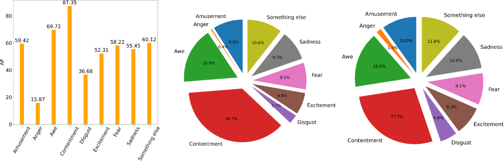 |
|
| Left: Per-class average precision. We can see vast differences among classes. Mid: Distribution of correct answers: how the total number of correct detections is distributed among classes.. Right: True distribution of classes in ArtEmis. We can observe that the distribution of correct answers matches the label distribution, which suggests that i) there is bias and ii) our model is data-hungry. |
Visualizations Below we show the Grad-CAM [12] visualizations of the classification model on unseen images in the test set. On each row we show two examples, where each example shows the original image (left) and the grad-CAM visualization (right) conditioned on the emotion label (caption). We show reasonable results in the first four rows and show results that's not interpretable in the last row. This suggests that the model learns to ground most of its decisions on the most salient image region correlated with the emotion label, but it also makes mistakes where it focuses on regions less correlated with the emotion label. Note that all images are padded here so that they have same height and width (hence some black areas).
| 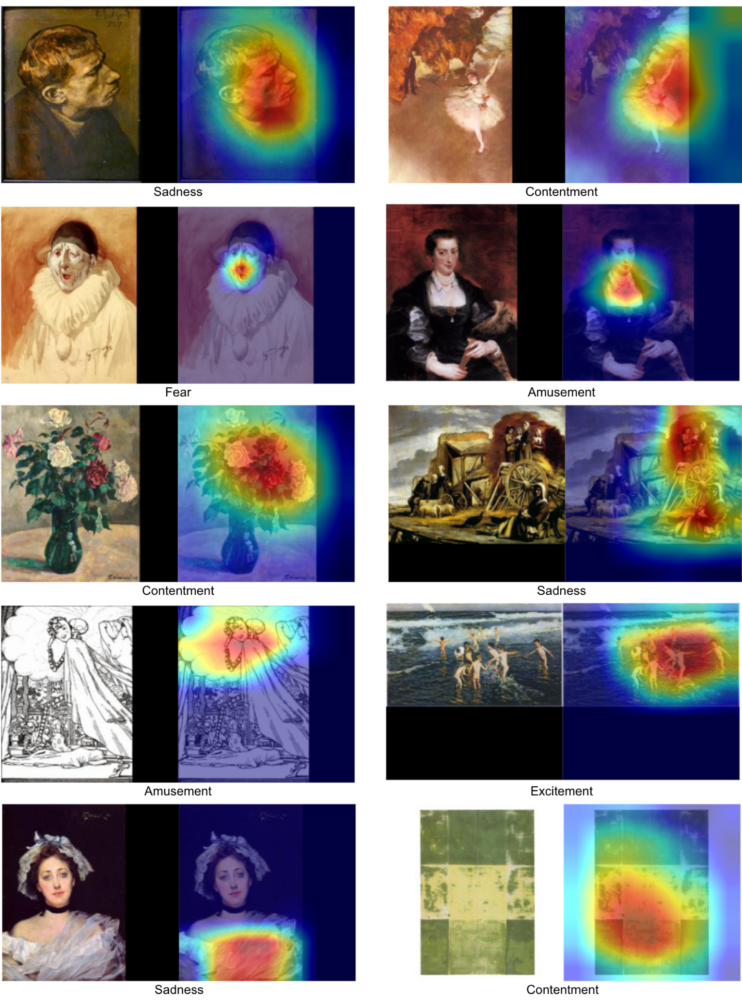 |
|
Below we also show Grad-CAM visualizations of model's prediction the same image but conditioned on different emotion labels. We show the original image (left), and two Grad-CAM visualizations of two different labels (middle and right). We see that the model relies on different part of the image to inform its prediction of different emotions.
| 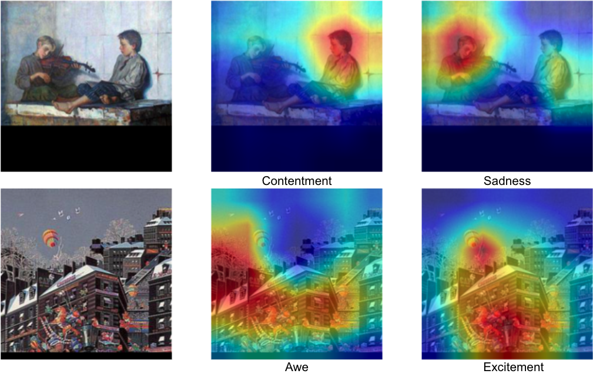 |
|
Results on Emotion Manipulation
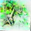
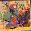
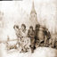
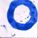
 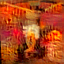
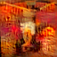
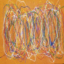
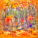
References[2] Yilun Du, Shuang Li, J. Tenenbaum, and Igor Mordatch. Improved contrastive divergence training of energy based models. ArXiv, abs/2012.01316, 2020. [3] Will Grathwohl, Kuan-Chieh Wang, Jorn-Henrik Jacobsen, David Duvenaud, Mohammad Norouzi,and Kevin Swersky. Your classifier is secretly an energy based model and you should treat it like one. ICLR, 2020. [4] Kaiming He, Xiangyu Zhang, Shaoqing Ren, and Jian Sun. Deep residual learning for image recognition. CVPR, 2016. [5] Tero Karras, S. Laine, and Timo Aila.\ A style-based generator architecture for generative adversarial networks. CVPR, 2019. [6] H. Kim, Yeong-Seok Kim, S. Kim, and In-Kwon Lee. Building emotional machines: Recognizing image emotions through deep neural networks. IEEE Transactions on Multimedia, 20, 2018. [7] Shaomeng Li, Yilun Du, Gido M. van de Ven, A. Torralba, and Igor Mordatch. Energy-based models for continual learning. ArXiv, abs/2011.12216, 2020. [8] Yilun Du and Igor Mordatch. Implicit generation and modeling with energy based models. NeurIPS, 2019. [9] Walaa Medhat, Ahmed Hassan, and H. Korashy. Sentiment analysis algorithms and applications: A survey. Ain Shams Engineering Journal, 5:1093–1113, 2014. [10] Saif M. Mohammad and Svetlana Kiritchenko. Wikiart emotions: An annotated dataset of emotions evoked by art. LREC, 2018. [11] Igor Mordatch. Concept learning with energy-based models. ICLR, 2018. [12] Ramprasaath R. Selvaraju, Michael Cogswell, Abhishek Das, Ramakrishna Vedantam, Devi Parikh, and Dhruv Batra. Grad-cam: Visual explanations from deep networks via gradient-based localization. ICCV, 2017. [13] Max Welling and Yee Whye Teh. Bayesian learning via stochastic gradient langevin dynamics. ICML, 2011. |